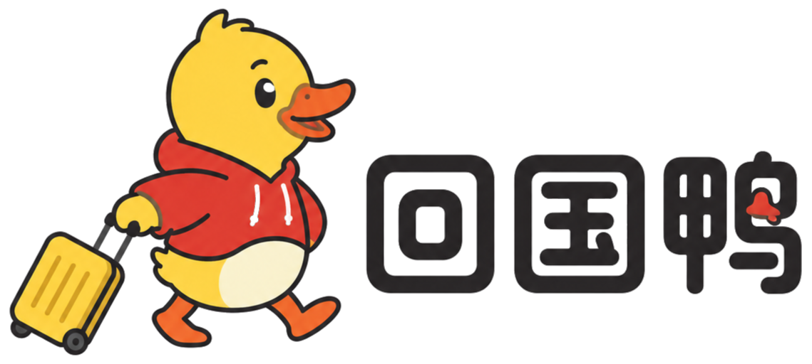

DYNAMIC APPENDIX澳洲留学生回国求职
官方渠道地图 · 动态附录
唯一维护责任人：Melody
固定更新时间：每周四
最后更新：2026-07-28（北京时间）
下次固定更新：2026-07-30（周四）
固定更新时间：每周四
最后更新：2026-07-28（北京时间）
下次固定更新：2026-07-30（周四）
本页保存会变化的具体入口、机会、截止时间和核验状态。电子书正文只保存渠道体系与核验方法。每次使用前请重新打开原始页面。
长期固定入口
| 类别 | 可点击入口 | 适合监测什么 | 最后核验 | 证据边界 |
|---|---|---|---|---|
| 国家招聘行动 | 教育部 2026 年“国聘行动”通知 | 招聘行动周期、参与方向与平台线索 | 2026-07-28 | 行动通知不是岗位清单。 |
| 高校毕业生就业 | 国家大学生就业服务平台 | 职位、专场招聘、实习与重点领域 | 2026-07-29 | 最后回到招聘主体原文。 |
| 央国企招聘 | 国务院国资委人事招聘｜国聘 | 央企、国企公告与公共招聘线索 | 2026-07-29 | 平台入口不替代单位公告与报名页。 |
| 留学人才服务 | 教育部留学服务中心服务大厅｜学历学位认证 | 认证服务与留学人才服务入口 | 2026-07-29 | 认证不自动解决岗位资格。 |
| 地方人社 | 全国人社政务服务平台 → 地方服务窗口 | 求职登记、见习、培训与地方公共就业 | 2026-07-29 | 地方身份与经办口径逐项确认。 |
当前案例与机会
| 机会 | 适用人群与关键条件 | 截止时间 | 原始入口 | 状态 | 最后核验 |
|---|---|---|---|---|---|
| 张家港市国有企业专业化青年人才招聘 | 海外院校申请人须逐项核对榜单、学位取得时间、留服认证、就业状态和居留条件。 | 2026-08-10 | 张家港市政府公告 | 可行动 | 2026-07-28 |
| 上海市白玉兰人才计划浦江项目 | 面向来沪工作、创业的海外留学人员及团队；申请人、单位、项目类别和时间均有条件。 | 资格认定 2026-08-14；项目及单位审核 2026-08-21 | 上海市科委申报指南 | 可行动 | 2026-07-28 |
| ITEC 全球创业赛 | 适合已有创业项目、团队与商业计划书等材料的人；完整资格仍须核验。 | 2026-08-31 | ITEC 官方报名页 | 待官方确认 | 2026-07-28 |
证据边界：“入口可访问”不代表职位仍开放，也不代表个人符合资格。最终以发布主体当期公告、附件、报名页与官方审核为准；本页不承诺覆盖全部岗位，也不承诺获得 offer。
公开入口：jr-academy-omni.github.io/jr-ebooks-site/australia-returnee-official-job-channel-map/appendix.html